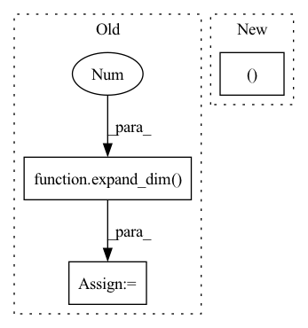

Pattern ID :855

Before Change
b = bh // h
Wsq = expand_dim(self.linear_sort_q, 0, b).reshape(bh, dim, dim_sort)
Wsk = expand_dim(self.linear_sort_k, 0, b).reshape(bh, dim, dim_sort)
nsk = expand_dim(self.null_sort_k, 0, b).reshape(bh, 1, dim_sort)
q_r = torch.cat((cumavg(q, dim=1), q), dim=-1)
After Change
bh, *_, h, buckets, dim, dim_sort = *q.shape, self.heads, self.buckets, self.dim, self.dim_sort
b = bh // h
Wsq, Wsk, pos_q, pos_k = map(partial(expand_batch_and_merge_head, b), (self.linear_sort_q, self.linear_sort_k, self.q_pos_emb, self.k_pos_emb))
k_r = torch.cat((cumavg(k, dim=1), k), dim=-1)
k_r = bucket(buckets, k_r)
In pattern: SUPERPATTERN
Frequency: 3
Non-data size: 3
Instances
Fragment ID: 2710696
Project Name: lucidrains/sinkhorn-transformer
Commit Name: a3d36f7cdf5b9a134787caf42ce18b5b28b0ddc5
Time: 2020-04-10
Author: lucidrains@gmail.com
File Name: sinkhorn_transformer/sinkhorn_transformer.py
M Class Name: CausalAttentionSortNet
N Class Name: CausalAttentionSortNet
M Method Name: forward(3)
N Method Name: forward(3)
M Parent Class: nn.Module
N Parent Class: nn.Module
M File Name: sinkhorn_transformer/sinkhorn_transformer.py
N File Name: sinkhorn_transformer/sinkhorn_transformer.py
M Start Line: 354
M End Line: 371
N Start Line: 365
N End Line: 380
'>
Before Change
b_k = bucket(buckets, k)
Wsq = expand_dim(self.linear_sort_q, 0, b).reshape(bh, dim, dim_sort)
Wsk = expand_dim(self.linear_sort_k, 0, b).reshape(bh, dim, dim_sort)
b_qi, b_ki = b_q.mean(dim=2), b_k.mean(dim=2)
After Change
Wsq, Wsk, pos_q, pos_k = map(partial(expand_batch_and_merge_head, b), (self.linear_sort_q, self.linear_sort_k, self.q_pos_emb, self.k_pos_emb))
b_qi = torch.cat((b_q.mean(dim=2), pos_q), dim=-1)
b_ki = torch.cat((b_k.mean(dim=2), pos_k), dim=-1)
sq = b_qi @ Wsq
sk = b_ki @ Wsk
'>
Fragment ID: 2710698
Project Name: lucidrains/sinkhorn-transformer
Commit Name: a3d36f7cdf5b9a134787caf42ce18b5b28b0ddc5
Time: 2020-04-10
Author: lucidrains@gmail.com
File Name: sinkhorn_transformer/sinkhorn_transformer.py
M Class Name: AttentionSortNet
N Class Name: AttentionSortNet
M Method Name: forward(3)
N Method Name: forward(3)
M Parent Class: nn.Module
N Parent Class: nn.Module
M File Name: sinkhorn_transformer/sinkhorn_transformer.py
N File Name: sinkhorn_transformer/sinkhorn_transformer.py
M Start Line: 203
M End Line: 211
N Start Line: 212
N End Line: 220
'>
Before Change
means, buckets, dists, se = kmeans(k_routing, self.means, training=self.training, init=not self.initted)
indices = distribution(dists, window_size)
routed_means = batched_index_select(expand_dim(self.means, 0, b), buckets)
commitment_loss = F.mse_loss(k_routing, routed_means) * self.commitment
if self.training:
After Change
k_routing = torch.einsum("bhtd,hdr->bhtr", qk, self.router) if self.router is not None else qk
k_routing = F.normalize(qk, dim=-1)
indices, commitment_loss = self.kmeans(k_routing, wsz)
qk = batched_index_select(qk, indices)
v = batched_index_select(v, indices)
'>
Fragment ID: 2710709
Project Name: lucidrains/routing-transformer
Commit Name: 76d902a49ad12e267571f62a45ead8cd22b3bc5c
Time: 2020-05-25
Author: lucidrains@gmail.com
File Name: routing_transformer/routing_transformer.py
M Class Name: KmeansAttention
N Class Name: KmeansAttention
M Method Name: forward(4)
N Method Name: forward(4)
M Parent Class: nn.Module
N Parent Class: nn.Module
M File Name: routing_transformer/routing_transformer.py
N File Name: routing_transformer/routing_transformer.py
M Start Line: 379
M End Line: 412
N Start Line: 381
N End Line: 424